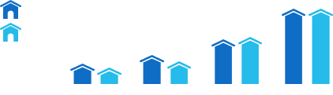

공업화를 추진하여 국력을 키우던 시기로 수도권과 동남해안 공업벨트 중심의 거점개발이 중점적으로 추진되었다.
교통 통신과 수자원, 에너지 시설 등 사회간접자본을 구축하여 고도 경제성장을 이끌었으며,
열악했던 국민생활환경을 개선하였다.
1972주택건설촉진법 제정
주택이 없는 국민을 대상으로 주택 공급을 계획적, 합리적으로 추진하고 국민 주거수준 향상을 위해 제정된 법으로
아파트 등 공동주택 건설을 촉진하는 계기가 되었다.
1972국토이용관리법 제정
기존 도시지역에만 적용되던 「도시계획법」의 한계를 벗어나 비도시지역에서도 계획적인 토지이용이
이루어질 수 있도록 한 법으로 국토계획의 실효적인 공간 적용범위를 확대시키는 데 기여하였다.
1973소양강댐 완공
1973산업기지개발촉진법 제정
중점사업으로 추진한 중화학공업의 효율적인 개발을 위해 산업기지개발구역의 지정,
산업기지개발공사(현 수자원공사) 설립, 토지수용과 이주대책 등에 대한 법적 근거를 마련하였다.
1973서울지하철 1호선 개통
1978국토개발연구원육성법 제정
1979국토개발장기구상
‘2001년을 향한 국토의 설계’라는 부제가 붙은 국토개발장기구상은 사업계획에 가까웠던 국토종합개발계획을
학술적으로 심도 깊은 연구가 결합된 과학적인 계획으로 한단계 높이려는 시도 였으며,
제2차 국토종합개발계획을 위한 중요한 토대가 되었다.
1980택지개발촉진법 제정
도시의 주택난을 해소하기 위하여 택지의 취득·개발·공급·관리에 공공부문이 관여하고 촉진할 수 있도록 한 법으로
신도시 건설정책의 신호탄이 되었다.
1981제2차 국토종합개발계획 공고
1972 1981
지역균형의 새로운 패러다임을 제시하다
제2차 국토종합개발계획(1982~1991)
제2차 국토종합개발계획은 국토개발연구원(현 국토연구원) 설립과 더불어 체계적으로 준비한 계획이었으며,
우리의 지식과 역량이 총집결된 최초의 국토계획이었다. 1980년대에 들어서면서 지역균형발전, 삶의 질, 환경보전 등의
새로운 가치가 부상함에 따라 새로운 패러다임을 제시하였다.
1982수도권정비계획법 제정
수도권에 집중된 인구를 분산시키고, 수도권의 질서 있는 정비, 균형 있는 발전, 환경보전 등을 도모하기 위해
「수도권정비계획법」이 제정되었다.
1984제1차 수도권정비기본계획 수립
수도권정비기본계획은 국토종합개발계획을 기본으로 하여 수립하는 계획으로,
제4차 수도권정비계획(2021~2040)까지 이어지고 있다.
1984 -
1988도심재개발 추진
88올림픽을 대비하여 대한주택공사에 의해 도심재개발이 이루어졌다.
공공기관이 도심재개발에 개입하여 추진한 최초의 사례다.
1986올림픽대로 완공
1987제2차 국토종합개발계획 수정계획 공고
1988주택 200만 호 개발계획 발표
1988토지공개념 3법(토지초과이득세법, 택지소유상한법, 개발이익환수법) 제정
88올림픽, 주택 200만 호 건설 등에 따라 부동산 가격급등이 나타나자 정부가 부동산 과열방지 및
토지이용의 공공성 강화를 위해 토지공개념연구위원회를 구성하여 입법한 3대 주요 법으로,
공시지가와 종합토지세도 함께 도입되었다. 그러나 2개 법은 각각 헌법불합치와 위헌판결을 받는 등
논란을 겪다 폐지되었으며 「개발이익환수법」과 기타 제도만이 남아서 이어지고 있다.
1990산업입지 및 개발에 관한 법률 제정
산업용지의 원활한 공급과 산업의 합리적 배치, 산업발전 촉진, 산업입지와 환경의 조화를 위해 제정한 법으로
공업단지의 지정, 유형구분, 개발 등의 체계를 통해 산업입지 정책의 기틀이 마련되었다.
1982 1991
국민복지와 환경보전을 위해 노력하다
제3차 국토종합개발계획(1992~2001)
국민의 복지향상과 환경보전을 목표로 지방분산형 국토개발을 추진했다.
서해안 산업지대를 비롯해 신산업지대를 조성하고 지방도시를 성장시켰다.
남북관계의 변화에 맞춰 통일에 대비한 국토기반 조성에도 힘썼다.
1992제3차 국토종합개발계획 공고
1993금융실명제 실시
대통령의 긴급재정경제명령으로 발동한 가명/차명/무기명의 금융 거래를 금지하고 실명 금융거래만 허용하게 한 제도로,
4년 후 정식 입법되어 오늘날에 이른다.
1994지역균형개발 및 지방중소기업육성에 관한 법률 제정
지역균형발전을 촉진하기 위하여 지방대도시와 대규모 공업단지를 중심으로
광역개발권역을 지정하여 수도권에 맞서는 경쟁력을 확보하도록 제정한 법으로 개발촉진지구 지정을 포함시킴으로써
「특정지역종합개발촉진에 관한 특별조치법」을 대체하였다.
1994성수대교 붕괴 사고
32명의 생명을 앗아간 성수대교 붕괴 사고로 인해 부실공사에 대한 경각심과 시설물 안전 점검에 대한
체계적 접근의 필요성이 제기되었으며, 「시설물의 안전관리에 관한 특별법」 제정과 시설안전기술공단의 창립으로 이어졌다.
그러나 그간 누적된 모순으로 인해 다음해 삼풍백화점 붕괴 사고가 발생하는 등 부작용이 오래도록 지속되었다.
1995제3차 국토종합개발계획 수정계획 착수
계획기간의 확장과 그에 따른 장기구상화, 21세기를 대비하는 여건 반영 등 다양한 구상이 이루어졌으나
결실을 맺지는 못했고 핵심적인 내용은 제4차 국토종합계획에 반영되었다.
1995부동산실명제 실시
금융실명제 도입에 따라 부동산시장으로 지하경제 자금이 흘러 들어가고 투기가 성행할 우려가 커지자
정부와 국회는 「부동산실권리자의 등기에 관한 법률」을 제정함으로써 이에 대응하였으며,
부동산거래 정상화와 시장 안정 등의 효과를 가져오게 되었다.
1995부산신항 건설
21세기 동북아시아의 물류거점 기능을 수행하기 위해 부산신항을 건설하였다.
부산신항은 미주, 유럽과 아시아를 연결하는 간선항로상에 위치하여 선박운항의 효율성을 기하였다.
1997외환위기(IMF 구제금융 요청)
외환위기 사태와 그에 따른 IMF 구제금융 요청으로 인해 우리나라 경제구조는 하나부터 열까지 바뀌었으며,
지금까지 그 여파가 이어지고 있다. 국토 측면에서도 인프라 건설, 주택시장 등에 직접적인 영향을 미쳤으며,
제4차 국토종합계획 수립에도 영향을 미쳤다.
2000제4차 국토종합계획 공고
1992 2001
개방형 통합국토를 추구하다
제4차 국토종합개발계획(2000~2020)
제4차 국토종합계획은 21세기를 출발하는 시점에서 한국의 장기 국토방향을 제시하는 국토발전의 ‘나침반’ 역할을 했다.
또한 두 차례의 수정계획(2006-2020과 2011-2020)의 수립과 추진을 통해 국토균형발전, 경제성장, 삶의 질 향상,
환경친화적 녹색성장, 세계적 추세에의 능동적 대응 노력이 있었다.
2001인천국제공항 개항
2002국토기본법, 국토의 계획 및 이용에 관한 법률 제정
국토종합계획의 모법인 「국토건설종합계획법」을 폐지하고 기본법의 틀로 재구성한 「국토기본법」을 제정하였으며,
「도시계획법」과 「국토이용관리법」을 통합하여 약칭 「국토계획법」을 제정함으로써 도시·비도시 지역의 계획체계를 완성,
오늘날에 이르고 있다.
20032기 신도시 추진
2003개성공단 착공
2004신행정수도특별조치법 제정
수도권 인구 분산과 국토균형발전을 촉진하기 위하여 충청권에 행정수도를 건설하기 위해 제정된 법으로,
당시 정부는 연기/공주 일대를 행정수도 부지로 삼고 행정수도 건설을 추진하였으나,
헌법재판소의 ‘관습헌법’ 논리에 따른 위헌판결로 인해 행정수도 추진은 결국 무산되었다.
2004고속철도(KTX) 개통
2005행정중심복합도시건설을 위한 특별법 제정
「신행정수도특별조치법」의 위헌판결에 따라 후속조치로 제정된 법으로
위헌판결의 핵심 쟁점인 ‘수도’ 개념을 회피하기 위하여 행정수도를 행정중심복합도시로 바꾸어
연기/공주 지역에 건설을 추진하게 되었으며, 이는 오늘날 세종특별자치시로 이어졌다.
2005제4차 국토종합계획 수정계획 공고
2007혁신도시건설 및 지원에 관한 특별법 제정
균형발전을 위한 공공기관 지방이전을 계기로 혁신도시 건설을 추진하면서 제정된 법으로
2019년 153개 공공기관이 10개 혁신도시와 세종시 및 기타 지역으로 이전을 완료
2007세종특별자치시 착공
2008유비쿼터스도시의 건설 등에 관한 특별법 제정
IT기술의 발전으로 정보통신기술의 도시서비스에의 활용과 공간 간의 연계에 대한 관심이 높아졌으며, 그에 따라 법을 제정하여 유비쿼터스도시 건설에 박차를 가하게 되었다.
이는 2017년 「스마트도시법」으로 이름을 바꾸어 이어져 오게 된다.
20084대강 정비사업 착공
2009국가공간정보에 관한 법률 제정
국가지리정보체계와 국토공간에서 생산된 정보를 공공과 민간이 서로 활용할 수 있도록 제정한 법으로
2015년 「국가공간정보 기본법」으로 재정립되었다.
2010새만금방조제 준공
2011제4차 국토종합계획 (재)수정계획 공고
2012국토계획평가 제도 도입
국토계획체계가 복잡화 및 고착화되면서 실효성과 상호 연계성이 낮아지는 문제를 해결하기 위하여,
각급 국토계획들이 최상위 계획인 국토종합계획에 얼마나 부합하는지, 계획 내용이 「국토기본법」 상
이념에 기여하는지 등을 평가하기 위해 도입된 제도로 지금도 활발하게 시행 중이다.
2012세종특별자치시 출범
세종특별자치시는 우리나라 최초로 광역과 기초를 포함한 단층제 광역자치단체로서 1읍 9면 1동으로
2012년 7월 1일 역사적인 출범을 맞이하였다. 인구 10만 751명으로 출발, 2017년 5월 26만 명을 돌파하면서
국가균형발전의 상징도시로 빠르게 성장하고 있다. 2022년, 세종시는 행복도시 착공 15주년, 출범 10주년을 맞이하여
지방분권과 국가균형발전 실현, 실질적인 행정수도 완성을 위해 나아가고 있다.
2013도시재생 활성화 및 지원에 관한 특별법
각 도시의 인구감소, 침체 등이 잇따르면서 체계적인 도시재생 계획수립과 국가지원 등이 필요해지면서 제정된 법으로
4년 후인 2017년 도시재생뉴딜사업 등으로 이어져 추진되었다.
2016개성공단 가동 전면 중단
2003년 남북화해무드에서 야심차게 착공되어 출발한 개성공단사업은 이후 남북관계 경색에 따라
2013년 한 차례 가동 중지되었으며, 2016년 2월 완전히 중지되었다.
이후 2020년에는 남북연락사무소가 폭파되는 등 통일국토에 대한 전망에는 먹구름이 드리우고 있다.
2016SRT 개통
20183기 신도시 건설계획 발표
2000 2020
인구감소와 저성장에 대응하다
제5차 국토종합개발계획(2020~2040)
‘제5차 국토종합계획’은 2020년부터 2040년까지, 20년간의 국토 개발과 관리 방향을 제시하고 있다. 이 시기는 우리가 처음 맞이하는 인구감소와 저성장, 4차 산업혁명 등 새로운 메가트렌드에 대응한 국토혁신 전략이 필요한 시기다. 지역 불균형, 기후변화와 미세먼지 등 우리 국토가 마주한 현안과 앞으로 다가올 시대의 과제를 고려해 국민과 함께 ‘제5차 국토종합계획’이 마련되었다.
2019제5차 국토종합계획 공고
2019제5차 국토종합계획 수립을 위한 국민참여단의 국토계획헌장 제안
2020코로나19 사태
마스크 상시착용으로 상징되는 전 세계적인 감염병 확산 사태는 비대면과 메타버스, 재택근무 활성화 등
우리의 삶의 모습을 크게 변화시켰으며 코로나19에 따른 집단적 경험은 미래 정주여건 형성과 국토공간 활용방식에
큰 영향을 끼칠 것이 예상된다.
2020임대차 3법 개정
부동산 시장 및 서민주거 안정을 위한 명목으로, 「주택임대차보호법」과 「부동산거래신고법」상
3가지 제도(계약갱신청구권제, 전월세상한제, 전월세신고제)를 도입하는 법 개정이 이루어졌다.
2021기후위기 대응을 위한 탄소중립·녹색성장 기본법 제정
2050 탄소중립이라는 국가목표 달성을 위해 기존의 「저탄소 녹색성장 기본법」을 대폭 수정하여
「기후위기 대응을 위한 탄소중립ㆍ녹색성장 기본법」이 제정되었다. 2030년까지 2018년 온실가스 배출량 대비
40% 감축을 목표로 하는 국가온실가스 감축목표 설정과 2050 탄소중립 시나리오 확정 등의 작업도 동 시기에 이루어졌다.
서울과 부산을 연결하는 경부고속도로는 우리나라의 근대화를 상징하는 국토 대동맥이다.
총길이 415.3km로, 약 430억 원이 투입되었고, 1967년 2월 1일 착공하여 1970년 6월 30일에 완공하였다. 경부고속도로는 우리나라의 기술과 재정으로 완공한 최초의 고속도로라는 점에서 그 의미가 각별하다.
한국전쟁 이후 폐허가 된 국토를 재건하기 위해서는 건설사업이 중요한 과제였다. 1961년
국토개발과 일자리 확충을 위해 창설된 국토건설본부는 5.16 군사정변 이후 국토건설단으로 명칭을 바꾸고 다목적 수자원 개발사업, 대간척지 개발사업, 특정지역 종합개발사업 등에 동원되었다. 당시 박정희 대통령은 “싸우면서 건설하자”라는 구호로 이들을 독려하기도 하였다.
건설수주액 변화
(단위: 억 원)
2000 : 전국 417,775 / 수도권 233,084
2010 : 전국 898,143 / 수도권 515,484
2021 : 전국 1,971,331 / 수도권 1,039,550
전쟁과 도벌, 남벌 등으로 인해 황폐해진 산지의 면적이 1956년 기준 68만ha에 달하였다.
‘사방사업 5개년 계획’을 수립하고 식목에 나섰지만 별로 효과가 없었다. 나무를 땔감으로 쓰고 있는 현실에서는 나무를 심는 식목이 나무를 베어내는 벌목을 따라잡을 수가 없었기 때문이다. 이에 정부는 1960년대 초부터 ‘산림녹화운동’을 추진하기 시작하였고, 1961년에는 「산림보호법」을 공포하였으며, 1967년에는 산림청이 발족되어 치산녹화사업을 진두지휘하였다. 이러한 과정을 통해 우리나라의 산림녹화는 세계적인 성공사례로 손꼽히게 되었다.
* 주 : 1) 해외조림이란 대한민국 국민이 단독 또는 합작으로 다른 나라에서 임지를 구매하거나 임차하여 국내 반입 또는 제3국에 수출을 목적으로 나무를 식재하는 사업이다.
2) 1993년에 첫 통계 수집(이전 누적량 미반영).
* 출처 : 산림청, 임업통계연보 해외조림현황.
도시공원의 우아한 변신
1980년 「도시공원법」이 제정되기 전까지 공원의 역할은 마을 뒷산이나 어린이놀이터가 대신했다. 「도시공원법」의 제정으로 광장이 생기고, 화단이나 분수 등 조경시설, 그네와 미끄럼틀, 수영장 등 유희와 운동을 위한 시설, 식물원과 동물원 등이 생겨났다. 더불어 신도시나 재개발지역 등에는 도시공원이 도심의 중앙에 자리를 잡아 도시의 개성을 만드는 데도 일조했다.
도시공원 조성면적
(단위: ㎢)
2000 : 214
2010 : 384
2020 : 525
1인당 도시공원 조성면적
(단위: ㎢)
2000 : 214
2010 : 314
2020 : 525
* 주 : 1인당 도시공원면적 = 도시공원 조성면적 ÷ 도시 지역 총인구
* 출처 : 국토교통부, 도시계획 현황.
누구에게나 추억의 장소가 되어주는,
한강의 어제와 오늘
과거 한강은 시민들의 여유시간을 보낼 수 있는 공간이었다. 물놀이, 낚시, 썰매를 타던 곳이다.
그러나 서울로 인구가 집중되면서 한강 주변에 무허가 판잣집이 늘어나게 되었다.
판잣집을 없애고 양질의 주택을 보급하기 위해 한강에 제방을 쌓아 택지를 개발하고 교통량 분산을 위해 다리가 놓였다. 한강종합개발계획은 88 서울올림픽 유치 이후 수립되었다.
한강종합개발을 통해 수상레저를 즐길 수 있는 수변공원을 만들고, 올림픽대로를 건설했다.
한강 수계 수질 변화(연평균 BOD 농도 기준)
(단위: mg/L)
1989 : 96.2
2005 : 8.0
2022 : 4.3
한강 수계 수질 변화(연평균 T-P 농도 기준)
(단위: mg/L)
1989 : 0.29
2005 : 1.23
2022 : 0.13
* 주 : 1) BOD는생화학적 산소요구량(Biochemical Oxygen Demand)을 의미하는 것으로서,
BOD가 높을수록 오염된 물이라는 것을 뜻한다.
2) T-P는 총인(Totla Phosphorus)을 의미하는 것으로서, 조류 번식의 영양성분이 되는
인화합물의 농도를 의미하며 T-P가 높을수록 오염된물이라는 것을 뜻한다.
* 출처 : 환경부, 물환경정보시스템 수질측정망 자료(안양천10 측정소(목동) 기준.
하나만 낳아도 삼천리는 초만원이라고?!
1960년 우리나라의 인구는 2,500만 명으로 매년 70만 명씩 증가하였다. 정부는 인구증가율을 억제하기 위해 가족계획을 실시하였다. 하지만 큰 효과가 없자, 1980년대에는 한 자녀 갖기를 목표로 '하나만 낳아도 삼천리는 초만원', '잘 키운 딸 하나 열 아들 안 부럽다' 등의 구호 아래 강력한 인구정책을 추진하였다. 1960년대 3.3%이던 인구증가율은 점차 줄어들어 1970년대 2.0%, 1980년대 1.6%, 1990년대는 1% 미만이었으며, 2001년부터는 초저출산 국가에 머물고 있다. 대신 급격한 고령화가 진행되어 2070년에는 세계에서 노인 인구 부양비용을 가장 많이 부담하는 나라가 될 전망이다.
1960년대 수출지향형 공업화를 추진하면서 도시의 일자리가 대폭 증가함에 따라 1960~1970년대는 일자리를 찾아 서울로 인구가 몰리는 이농현상이 두드러졌다.
그러나 기반시설이 마련되지 않는 상태에서 인구가 집중되면서 주거문제, 교통난, 취업난, 범죄 등의 사회문제도 늘어날 수밖에 없었다.
수도권-비수도권 인구비중 변화 전망
(단위: ㎢)
1970 : 비수도권 71.7 / 수도권 28.3
1980 : 비수도권 64.5 / 수도권 35.5
1990 : 비수도권 57.2 / 수도권 42.8
2000 : 비수도권 53.7 / 수도권 46.3
2010 : 비수도권 50.7 / 수도권 49.3
2020 : 비수도권 49.9 / 수도권 50.1
2030 : 비수도권 49 / 수도권 51
2040 : 비수도권 48.6 / 수도권 51.4
2050 : 비수도권 48.3 / 수도권 51.7
2060 : 비수도권 47.9 / 수도권 52.1
2070 : 비수도권 47.6 / 수도권 52.4
* 출처 : 국토교통부, 제4차 수도권정비계획.
상전벽해의 세종시
옛 충청남도 연기군 전체와 공주시의 일부, 옛 충청북도 청원군의 일부를 편입하여
2012년 7월 1일에 출범한 세종특별자치시는 중앙행정기관 이전을 통해
행정기능 중심의 복합형 자족도시로 성장기반을 닦았다.
중앙행정기능을 도시의 중심에 배치하고, 소속기관 및 공공기관의 분산 입지를 유도하여
균형발전의 여건을 갖췄다.
서울시 반포 아파트단지는 소양강댐 등이 건설되면서 홍수위험이 사라지자 공유수면매립
이라는 이름으로 개발되기 시작하였다. 대한주택공사가 주도한 반포 아파트단지 건설은
1973년에서 1974년경 242억 원의 공사비를 투입하여 22평에서 42평 규모의 중산층용
아파트 3,786호를 건설하였다. 반포아파트 동편에는 (주)한신공영이 126개 동
1만 1,429가구의 고층아파트를 건립했으며 대림, 한양, 경남, 우성, 롯데설악과 같은 아파트가 강남고속터미널 북편에 들어서 ‘신반포’라는 메머드 단지가 만들어졌다.
주택 가격지수

1986 : 전국 27.7 / 서울 23.5
1990 : 전국 37.8 / 서울 29.6
2010 : 전국 64.9 / 서울 66.3
2022 : 전국 100 / 서울 100
아파트 가격지수
1986 : 전국 15.9 / 서울 12.6
1990 : 전국 24.4 / 서울 18.1
2010 : 전국 59.2 / 서울 60.7
2022 : 전국 100 / 서울 100
* 해당 연도 1월 기준.
한여름 태양보다 더 뜨거운
내집마련의 꿈
서울시 압구정동 현대아파트가 부와 권력의 상징으로 자리잡으면서 아파트에 대한 열망이 전 국민에게 퍼져나갔다. 아파트 분양 열기는 엄청난 경쟁률을 달성했고, 당첨은 곧 부의 축적을 의미하는 것이어서 아파트 분양 당첨은 모두의 절박한 꿈이었다.
전국 주택 점유형태
(단위: %)
1975 : 자가 63.1 / 전세(월세없음) 17.3 / 보증금 있는 월세 15.5 / 무상 및 기타 4.1
1985 : 자가 53.6 / 전세(월세없음) 23.0 / 보증금 있는 월세 10.1 / 보증금 없는 월세 9.7 / 무상 및 기타 3.7
2000 : 자가 54.2 / 전세(월세없음) 28.2 / 보증금 있는 월세 10.7 / 보증금 없는 월세 2.0 / 사글세 2.2 / 무상 및 기타 2.8
2020 : 자가 57.3 / 전세(월세없음) 15.5 / 보증금 있는 월세 21.0 / 보증금 없는 월세 1.9 / 사글세 0.6 / 무상 및 기타 3.7
서울로 인구가 몰리면서 절대적인 물부족 현상이 발생했다.
식수를 안정적으로 공급하고 수인성 전염병을 예방하기 위한 상수도 시설 확충이 시급한 상황이었지만 재정이 부족했다. 결국 외국의 원조를 받아 수도시설을 개선하였고, 1970년 33.1%에 불과하던 상수도 보급률이 2020년에는 99.4%에 달해 대부분의 지역에서 수돗물을 이용할 수 있게 되었다.
1970년 인구 100명당 0.4대이던 자동차 등록대수가 2020년에는 47대로 증가했다.
4인가구의 경우 3~4대를 소유하기도 한다. 이처럼 지속적으로 증가하던
자동차 등록대수는 코로나19로 인한 경기침체와 대중교통 이용률 증가 등의 다양한 원인으로 주춤할 것이 전망되나, 전기차, 수소차 등 친환경차량 및 공유차량, 자율주행차량 등 이용자의 조건에 맞춰진 선택지는 점차 확대되고 있다.
1967년 가발을 수출전략산업으로 지정한 정부는 공업단지를 조성해
본격적인 생산을 시작하였다.
가발에 이어 품질 좋은 옷과 신발을 수출하면서 우리나라는 경공업이 발전하게 된다.
아울러 산업단지를 중심으로 한 성장거점 전략을 수립, 추진하였다.
당시 성장거점으로 선정된 울산, 포항, 여수 등의 지역들은 오늘날 세계적으로 유명한
중견 공업도시로 성장하였다.

 (단위: %)
1970 : 2.18
(단위: %)
1970 : 2.18